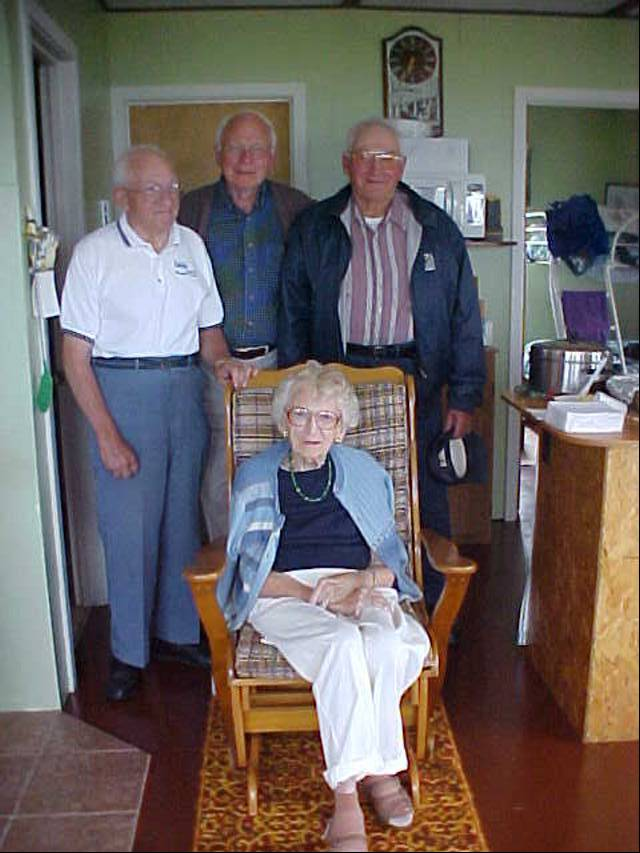

The Family Chronicle
No.27 September 1, 2002
__________
Family Reunion – 2002

Venetia, Ken, Don & Norm at family reunion on July 27, 2002. Photo taken at Ken and Verne’s cottage in Point Aux Carr
Yankee Toast
My sister, Lillian, recalled how much she enjoyed Mum’s Yankee Toast. I vaguely recall it and others in the family recalled it but not how it was made.
A search of the internet reveals a number of recipes but they were a version of French Toast – usually with cinnamon.
An enquiry to Margaret Prouse, a regular contributor on food to the Charlottetown Guardian, brought the following information.
“Yankee toast was served as a treat at either breakfast or supper. It was prepared by combining a
bit of pork fat, a good tablespoon of molasses, and about the same amount of water in a cast iron frying pan. A slice of bread was dipped in the mixture in the frying pan, and then quickly turned over so that both sides were coated. One side was fried until the molasses caramelized and then the process was repeated to the other side. Butter could be used instead of pork fat.
Another approach is to take a thick slice of bread and butter both sides. Heat molasses until it bubbles. Allow bread to cook briefly than turn over and repeat. Home made bread is best and preferably a day or two old; “store bought” bread tends to get soggy.”
According to the History of Bay du Vin, years ago English ships were chasing French ships in Bay du Vin; the French ships were loaded with wine. To prevent capture, the French threw their casks of wine overboard. The casks floated to Point aux Carr, which is the French word for cask.
Humphrey pants were prized. The name came from the company that made them – or at least, made the cloth. Humphrey’s Mill was on the outskirts of Moncton. I remember the old red brick buildings when I was a student in Moncton; they were not far from where Ken and Verne once lived. The building may even be still standing. Humphrey cloth was made of wool and as I recall, mottled dark greenish in colour. It was finely woven and, therefore, both warm and relatively waterproof. There was imitation cloth but the Humphrey label had prestige as well as durability; it was also expensive. It was standard in my family but only once did I manage to warrant a pair of Humphrey pants.
In talking about Humphrey pants at the recent family reunion, Norm recalled someone saying, I forget who, “with Humphrey pants, no matter how cold and wet you were, you were always warm and dry.”
Thanks to the following for recent contributions to the Fund: Ray and Jeannie Williston, Alton Glendenning, Eileen Glendenning, Jarret Glendenning and Kelli Morton
I was asked recently about the purpose of the Glendenning Fund and why one should contribute. Let me say two things first. The money from the Fund is not for the use of the Glendenning family; grants may be made for any charitable purpose in the community of Black River. Contributions are voluntary, income tax receiptable in both Canada and the USA. Just now, we are building the fund and soliciting contributions. Even after it is established, contributions can be made at any time. For instance, a contribution can be made in memory of a deceased, or on someone’s birthday or other special occasion. Provisions can also be made in a will.
In my volunteer work with the Foundation, I find that people give because they want to:
give something back to their community
support a worthy cause
remember a family member or friend
honour an achievement or an event in a persons life
support a charitable cause of special interest.
Speaking personally, I am proud of the Glendenning name and the contributions of my parents and siblings to their communities. Growing up in Black River made a significant contribution to who and what I am. Although I no longer live there, contributing to the Fund is a way I can give something back.
Lillian had this to say about Mum’s cooking
“Mum was the best cook ever. Having a big family to feed, bread to make almost every day, and in those days, a bread had to be set overnight, starting with a batter called sponge, in which the yeast was mixed into about a quart of flour and let rise. Quick yeast wasn’t used until the war years in the forty’s. That sure was an improvement, so much less time to make bread. Many times Mum would cook hot biscuits and applesauce for breakfast along with porriage, fried potatoes, lots of fresh cream. Mum’s specials were Yankee toast (bread fried in molasses) scallop
potatoes, apple pie baked in a square pan and cream on top. Do you remember when she would bake cinnamon rolls and put a sauce over it before they were put in the oven to bake, How we all loved that for dessert. Then there were cooked cranberries with thick cream on them and hot biscuits to eat with it”.
Edith MacKenzie once said ‘give Aunt Jane something to cook with and no one can beat her for putting up a good meal in a hurry’. … (Dad) told her at noon that there would possibly be twelve or fifteen men in for supper”
A recent note from Shirley MacKay mentioned how good Mum’s meals were.
I do not know when the first saw mill was constructed at Little Branch, however, the History of Bay du Vin records a sawmill operated by Ortho Robichaud in 1789 in the Bay du Vin area.
The Bay du Vin history also reports the following taken from the Gleaner in 1833.
“Mr. George Fowlie erected a grist mill on the Little Black River, which commenced grinding last week. We have seen some bread made of the flour manufactured at this mill and it was of superior quality. It has a never failing stream of water and will be a great accommodation to the inhabitants of Bay du Vin and adjoining settlements where such an establishment was much wanted.” The Fowlie mill was burned and rebuilt twice. “
The 1913 and 1915 reports of St. Stephen’s Church refer to Walls’ Brook. I always knew it as “Wells’es” Brook.
Chronicle is an occasional newsletter published by Don Glendenning It is intended to solicit and provide information about family tree matters. Comments, enquiries and information may be sent to 62 Queen Elizabeth Drive, Charlottetown, PEI, C1A 3A9. Tel:902-892-5859 Email dglende@attglobal.net. Feel free to make and pass along copies of this newsletter